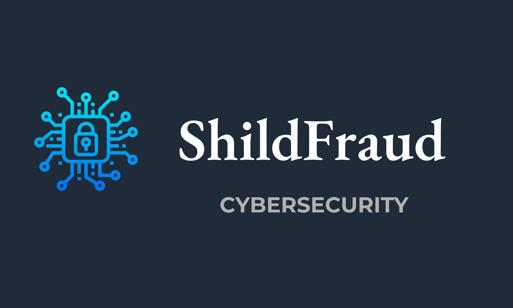

Proteção inteligente contra os principais golpes virtuais
O ShieldFraud é uma solução inovadora para empresas que desejam se proteger contra os mais variados tipos de golpes digitais. Utilizamos tecnologia de inteligência artificial para bloquear tentativas de fraude em tempo real, garantindo a segurança de seus dados e ativos.
Os golpes digitais estão em constante crescimento, e empresas estão perdendo milhões de reais todos os anos. O ShieldFraud oferece uma camada adicional de segurança, identificando padrões suspeitos antes que qualquer fraude aconteça.
Inscreva-se para a Pré-venda Exclusiva
O ShieldFraud foi criado para proteger, educar e prevenir fraudes. Nenhuma informação do usuário é compartilhada com terceiros. A dependência excessiva da ferramenta não é incentivada — reforçamos que a segurança real depende de treinamentos, boas práticas e cultura interna.
Nossa tecnologia é 100% compatível com a LGPD e demais leis de privacidade e segurança cibernética. Todos os dados são criptografados, tratados com consentimento explícito e armazenados com rigor técnico.
É proibido o uso indevido da plataforma, incluindo espionagem empresarial, perseguição digital, uso contra terceiros ou qualquer forma de abuso tecnológico. A missão do ShieldFraud é proteger — e nunca servir como ferramenta de opressão ou invasão.
Continuaremos oferecendo materiais educativos, simuladores e atualizações para garantir que todos cresçam com consciência e proteção.
Juntos contra os golpes. Juntos pela proteção ética.
O ShieldFraud é uma plataforma que tem como objetivo a proteção de dados e a prevenção de fraudes digitais em empresas e indivíduos. Ao utilizar nosso serviço, o usuário reconhece que a responsabilidade pela segurança digital é compartilhada com a tecnologia fornecida, sendo essencial a colaboração de ambas as partes para uma proteção eficaz.
Importante: O uso do ShieldFraud não substitui a necessidade de políticas internas de segurança digital por parte das empresas, sendo essencial a implementação das melhores práticas de segurança por parte do cliente para garantir a efetividade da solução.
Qualquer medida de segurança adotada será realizada com o consentimento prévio do cliente, e a empresa ShieldFraud se compromete a garantir a total confidencialidade das informações tratadas.